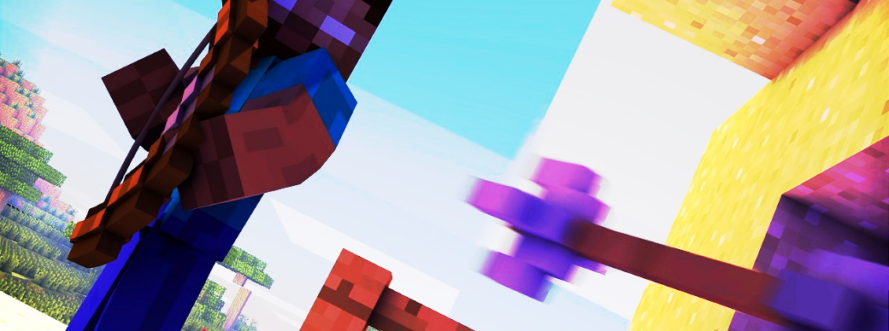
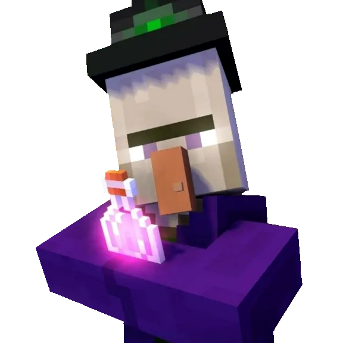

概要

アポロンは弓ともう一つ特殊ウェポンを所持して行う、弓矢がメインのPVPです。
PVPといってもデスマッチになっており、矢を当てられた場合にシールドを張っていないとワンパンされるという仕様になっています。
フェーズ
・エントリー
エントリーのフェーズです。
エントリールームにて好きなウェポンを選択できます。
このとき選べるウェポンには制約があり、サプライアブルウェポンは選べません。
そしてそのセレクターに表示されるウェポンは開放済みのウェポンに限ります。
いち早くすべてのウェポンを開放をしましょう。
・プリパレ―ション
戦闘準備のフェーズです。
プレイヤーが透明化つきの状態で一点からスポーンします。
この時ウェポンは移動系のもののみ、利用できます。
はじめの場所とりで役立てましょう。
・メインプレイ
ゲームのメインフェーズです。
ゲームが開始されてから、半分が経過すると商売人が現れます。
サプライアブルウェポンをうまく活用してゲームを優位に進めましょう。
バリアブロックで周りがふさがれていないため、落下の危険性があるので注意が必要です。
商売人

ゲームが開始後半分が経過するとスポーン地点に現れます。
最初に攻撃したプレイヤーへサプライアブルウェポンを差し出します。
素手で攻撃しても、弓で射貫いても商売人は反応してくれます。
・エクストラ
延長戦のフェーズです。
一度スポーン地点に集められ、そこから再びゲームスタートです。
エクストラでは区画が狭められます。
アリーナによっては、景観が変わっていたりします。
バリアブロックで周りがふさがれているため、落下はしません。
・エンド
ゲーム終了のフェーズです。
ゲームの勝敗結果と、キル数のランキングが表示されます。
勝ち負け判定
・単独生存
正真正銘のひとり勝ちです。
このパターンでのみ、プレイヤーは勝利カルマを獲得できます。
・複数生存で時間切れ
引き分けになります。
・相撃ちによる全滅
全員が敗者の判定になります。